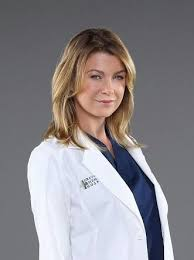
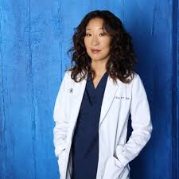
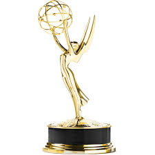
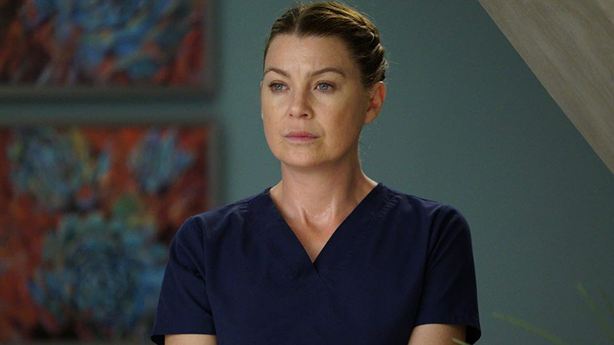
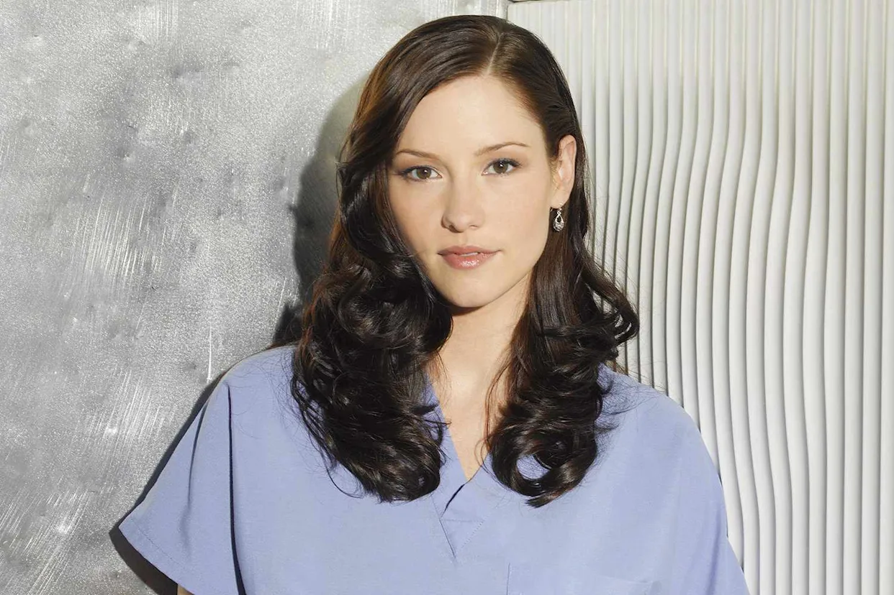
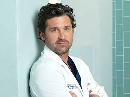
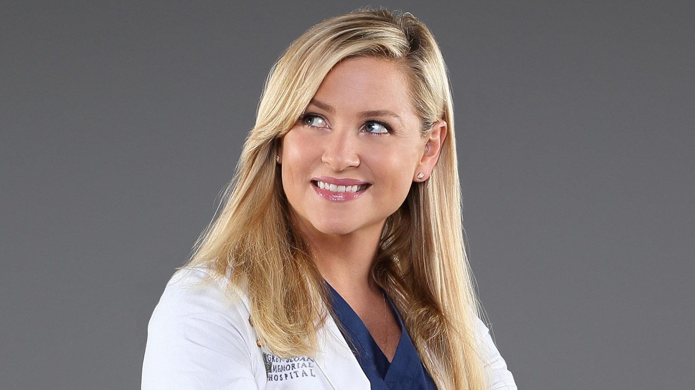

Um pouco sobre a série:
Grey’s Anatomy é uma série de drama médico que acompanha a rotina intensa de médicos, residentes e internos no hospital fictício Grey Sloan Memorial, em Seattle. A história é centrada em Meredith Grey, que inicia como residente de cirurgia e, ao longo das temporadas, se desenvolve até se tornar uma cirurgiã renomada. A trama mistura casos médicos desafiadores com a vida pessoal dos personagens, explorando amizades profundas, r omances complicados, perdas marcantes e dilemas éticos. Conhecida por suas reviravoltas emocionantes, a série combina tensão hospitalar com histórias humanas comoventes.
Fonte: Wikipédia
Curiosidades:
Grey’s Anatomy quase se chamou Surgeons e seria em outra cidade, mas foi ambientada em Seattle com o nome inspirado no livro de anatomia. Alex Karev foi adicionado após o piloto, o elenco foi pensado para ser diverso e a série popularizou expressões como “McDreamy”. Quase todos os episódios têm nomes de músicas, as cenas cirúrgicas usam órgãos de gado para realismo e momentos icônicos, como o casamento de post-its, surgiram de improvisos. Sandra Oh quase foi a Dra. Bailey, Ellen Pompeo foi convidada sem testes, e muitos atores dirigiram episódios. A produção introduziu personagens não-binários e já inspirou fãs a salvar vidas. No ar desde 2005, é o drama médico mais duradouro da TV americana.




Premiações:

PEA
Primetime Emmy Awards (PEA) – Ganhou prêmios de elenco, maquiagem, efeitos e atuação (2006–2011).
Saiba mais
PCA
People’s Choice Awards (PCA) – Eleita Drama Favorito e Melhor Série de TV (2015, 2024).
Saiba mais
GMA
GLAAD Media Awards (GMA) – Reconhecida por representatividade LGBTQ+ (2012, episódio premiado).
Saiba maisPERSSONAGENS:






